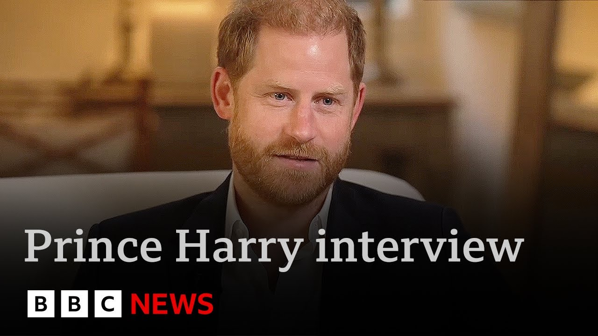

来B站一起耍【Global每日英语简报】
【哈里王子称查尔斯国王不与他交谈，希望和解 | BBC新闻】
Summary: Prince Harry gave a candid interview about his strained family relations and legal battle over UK security, expressing devastation over the court ruling and desire for reconciliation despite ongoing disputes.
摘要： 哈里王子坦诚谈及与王室成员的紧张关系及英国安保法律诉讼，对法院裁决表示痛心，尽管存在分歧仍希望和解。

⏱️ Estimated Reading Time: 14 min
In an extraordinary interview tonight, Prince Harry has spoken candidly about the breakdown of his relationship with his father and other members of the royal family.
在今晚一次特别的采访中，哈里王子坦率地谈到了他与父亲及其他王室成员关系的破裂。
He says his father doesn't speak to him, but added he would love a reconciliation.
他表示父亲不与他交谈，但补充说他希望和解。
The prince gave an exclusive interview to the BBC hours after he lost his legal challenge about the level of security he receives when he's in the UK.
在针对英国安保级别的法律诉讼败诉数小时后，哈里王子接受了BBC独家专访。
His protection funded by the taxpayer was downgraded in 2020 after he stopped being a working royal.
2020年他退出王室职务后，由纳税人资助的安保级别被降低。
Prince Harry called today's court ruling an old-fashioned establishment stitchup.
哈里王子称今日法院裁决是"老派体制的蓄意陷害"。
Tonight, Buckingham Palace said all the issues had been examined meticulously by the courts.
今晚白金汉宫表示所有问题都已由法院详尽审查。
Prince Harry has been speaking to our North America correspondent Neta Toofi in California.
哈里王子在加州接受了本台北美记者内塔·图菲的采访。
Hello, Prince Harry.
你好，哈里王子。
Shortly after hearing the court's legal judgment, a devastated Prince Harry sat down for what was an emotional and candid interview.
听闻法院判决后，心碎的哈里王子进行了一场充满真情实感的坦诚访谈。
I started by asking him how he was feeling.
我首先询问了他的感受。
Pretty uh pretty gutted about the the decision.
对...对这个决定感到非常非常沮丧。
We thought it was going to go our way, but it certainly have it certainly has proven that there was no way to win this through the through the courts.
我们原以为会胜诉，但事实证明通过法庭无法赢得这场诉讼。
Wish I someone had told me that beforehand.
真希望有人事先告诉我这一点。
Um but um yeah it's it's um it's been the decision has been been a surprise as well as not a surprise.
但这个决定既在意料之外又在情理之中。
Um so yeah I for the time being it's impossible for me to take my family back to the UK.
所以目前我无法带家人回英国。
I can't see a world in which I would be bringing my wife and children back to the UK at this point.
现阶段我看不到有任何可能让我带妻儿返回英国。
Um and the things that they the things that they're going to miss is well everything.
他们将错过的一切...可以说是所有东西。
You know I love my country.
你知道我爱我的国家。
I always have done.
一直如此。
Um, despite what some people in that country have done.
尽管那个国家的某些人做了那些事。
Um, so, you know, I I miss I miss the UK.
所以我...我想念英国。
I miss parts of the UK.
我想念英国的某些地方。
Of course I do.
当然想念。
And I think that it's really quite sad that I won't be able to show, you know, my children my homeland.
想到无法向孩子们展示我的祖国，这让我非常难过。
Do you want the court battle to continue?
您希望继续法律斗争吗？
Do you want to try to see this get to the Supreme Court?
是否打算上诉至最高法院？
Have you been I don't want any battles to continue.
我不想继续任何斗争。
Um there is way too much suffering and way too much conflict in the world.
这个世界已经有太多苦难和冲突。
This at the heart of it is a family dispute.
这本质上是一场家庭纠纷。
And it makes me really really sad that we're sitting here today 5 years later where a decision that was made most likely in fact I know to keep us under the roof.
五年后的今天我们坐在这里，想到当初那个决定——我很清楚——本意是要维系这个家，这让我无比痛心。
Um but then once you realized that that wasn't going to work once we once they realized that you know myself my wife and our kids are are happier outside of the institution then please just look at the facts look at the risks look at the threat look at the impact that if anything was to happen to me my wife or my father's grandchildren if anything was to happen to them look where the respon responsibility lies you know so you know there's there's there's there's a duty of care that has been completely thrown out the window.
但当他们意识到我们——我、妻子和孩子们——在体制外更快乐时，就该看看事实、风险、威胁和后果：如果我们或父亲的孙辈遭遇不测，责任该由谁承担？这种监护责任已被完全抛弃。
Um, and that doesn't feel great.
这种感觉很糟糕。
Um, you know, whether whether we agree or disagree and there's a lot that we there's a lot we agree on, there's a lot that we disagree on.
无论我们有多少共识或分歧。
But that aside, where is the where is the duty of care?
但抛开这些，监护责任在哪里？
Because, as I said, life is precious.
因为生命如此珍贵。
And it is very clear that from 2020 because I was no longer allowed an official role and because I decided to remove myself eventually from the institution that my life got devalued from the highest score to the lowest score overnight and you reject that it has nothing to do with the fact that you're no longer a working royal.
显然自2020年起，由于不再担任公职并最终退出体制，我的生命价值一夜之间从最高降至最低——你们否认这与退出王室工作有关。
whether I have an official role or not is irrelevant to the threats, risks, and impact on my on on the reputation of the of the UK if something was to happen.
无论是否担任公职，都不改变威胁、风险及可能事件对英国声誉的影响。
And again, that is proven by all of the all of the examples that exist out there.
现有所有案例都证明了这点。
So for me having an official role was conditional on keeping security.
所以对我而言，担任公职本应以保留安保为条件。
But for everybody else, people who have chosen this life to enter into public office and then leave get it for life regardless of whether they have risk or threat to their name.
但其他人选择从政后离职却能终身获得保护，不论是否面临威胁。
And by the way, I agree with that.
顺便说，我认同这种做法。
I think that is absolutely the right thing to do.
我认为这完全正确。
that if you come in and you serve your country, even if it's a minimum of four years, that you get the protection that you require because of your public service.
只要为国家服务过，哪怕仅四年，都应因公共服务获得所需保护。
I've was born into this position.
我生来就处于这个位置。
It wasn't a choice.
并非自主选择。
I've served my country for 35 years.
我已为国家服务35年。
I believe that I am still continuing to serve my country.
我相信自己仍在继续服务国家。
Public service is my life.
公共服务就是我的生命。
That is the dedication that will never change.
这份奉献永不改变。
Um, and then all the other bits and pieces that are added to that.
至于附加的其他种种。
Um, you know, there are very, very real threats that exist out there.
要知道外界存在非常真实的威胁。
How are you feeling about this decision?
您对这个决定作何感想？
Because clearly you have two children, Archie, Lilyette.
您有两个孩子——阿奇和莉莉贝特。
They're not able to see their grandfather, their uncle, their cousins in a way that you feel is safe for them.
他们无法在您认为安全的情况下见到祖父、叔叔和堂兄妹。
So, what's your feelings kind of moving forward?
您对未来有何打算？
Is there any way that this could be resolved?
此事有可能解决吗？
Um the only I mean firstly I yeah you know I I'm I'm I'm devastated.
首先...我确实...非常痛苦。
Um not so much as devastated as the with the loss that I am about the people behind the decision um feeling as though this is okay.
与其说是对决定本身，不如说是对决策者们认为这没问题的态度感到痛心。
You know I don't Is it a win for them?
这对他们算是胜利吗？
Is it a win that, you know, that that I don't get the protection that the threats and risks and impact say that I should?
根据威胁、风险和影响评估我应得却未获得的保护——这算他们的胜利？
Um, I would hope they wouldn't consider it a win.
我希望他们不这么认为。
And I'm sure there's some people out there, probably most most likely the people that wish me harm, consider this a huge win.
但肯定有些人——很可能那些希望我受伤害的人——视此为巨大胜利。
Um but you know I've this is there are there have been so many uh disagreements differences between me and uh some of my family.
但要知道，我和部分家人存在太多分歧。
Um this current situation that has been on now ongoing for 5 years with regard to um human life and safety is the sticking point.
当前持续五年的关于人身安全的争议才是症结所在。
it is the only thing that's left.
这是唯一遗留的问题。
Um, of course some members of my family will never forgive me for writing a book.
当然有些家人永远不会原谅我出书。
Um, of course they will never forgive me for lots of things.
也不会原谅我做的许多事。
Um, but you know there is I would I would I would love I would love reconciliation with my family.
但我非常渴望与家人和解。
I've always I've you know there's no point in in in continuing to fight anymore.
一直如此...继续斗争已无意义。
As I said, life is precious.
如我所言，生命宝贵。
Um I don't know how much longer my father has.
不知父亲还能活多久。
Um you know he uh he he he won't speak to me because of this security stuff.
因为安保问题他不愿与我交谈。
Um but it would be nice to it would nice it would be nice to rec reconcile.
但能和解当然很好。
There are things that have happened that I can now forgive.
有些事我现在可以原谅。
I've moved past that.
我已经释怀。
I can forgive my family's involvement, my father's, my brother and uh my stepmother.
可以原谅家人——父亲、兄长和继母的参与。
I can forgive I can forgive the press to a large extent as well for so many things that have happened.
也能很大程度上原谅媒体做的许多事。
What I'm struggling to forgive and what I will probably always struggle to forgive um is that a decision that was made in 2020 that affects my every single day.
但2020年那个影响我每日生活的决定，我难以且可能永远无法原谅。
Well, let's talk to our royal correspondent Sarah Campbell.
现在连线王室记者莎拉·坎贝尔。
What response has there been to this from Buckingham Palace?
白金汉宫有何回应？
Sarah?
莎拉？
Yeah, I mean really the palace response couldn't be clearer.
王室回应再明确不过。
Let's just read that sentence out again.
请再读一遍声明。
They say that all of these issues have been examined repeatedly and meticulously by the courts with the same conclusion reached on each occasion.
声明称所有问题都经法院反复细致审查，每次结论都一致。
And this has been a long legal process.
这是漫长的法律程序。
You'll remember this was an appeal.
本次是上诉案。
Harry had already lost at the high court.
哈里已在高院败诉。
Um useful to hear some of the words that were said in court today.
有必要回顾今日法庭陈述。
In the ruling, it was said that Prince Harry had made powerful arguments about the level of threat he and his family face, but that his sense of grievance did not translate into a legal argument and hence that appeal was dismissed.
裁决指出哈里王子虽有力论证了其家庭面临的威胁级别，但不满情绪不构成法律依据，故驳回上诉。
So as frustrated as Harry is with the process, this is some of the country's most senior judges again finding that the decisions that relate to his security were taken properly and took into account the fact that he was stepping back from royal duties and choosing to live overseas.
尽管哈里对程序不满，但该国最高级别法官再次认定其安保决策恰当，并考虑了他退出王室职责及定居海外的事实。
The other factor that comes through in the interview, could the king, the head of state, as Prince Harry alludes to in the interview, could he have got involved?
采访中另一关键点：如哈里暗示的，作为国家元首的国王本可介入？
Could he have used his influence on his son's behalf?
本可利用影响力帮助儿子？
While the counterargument to that is that it would be constitutionally very difficult while this was being considered by the government and by the courts.
但反论点是在政府与法院审议期间，宪法上难以干预。
And so more broadly where where does this go?
更广泛来看，事态将如何发展？
Harry says he wants reconciliation.
哈里表示希望和解。
We have this halfhour long interview very candid very heartfelt.
这段半小时的采访极其坦诚动人。
And you look it's making global headlines headlines around the world just as that Oprah interview did in 2021 just as his autobiography did in 2023.
正如2021年奥普拉专访和2023年自传一样，正在引发全球头条。
And part of that is because what it says also about the state of relations within the royal family.
部分原因在于它揭示了王室内部关系现状。
If anyone had any question about the relationship between him and particularly his father and whether those rifts had been healed, that interview seems to answer those questions.
若有人对他与父亲的关系及裂痕是否愈合存疑，这次采访似乎给出了答案。
He says he wants reconciliation, but that his father won't speak to him.
他说渴望和解，但父亲拒绝交谈。
And this line stood out to me.
这句话令我印象深刻：
He said that he doesn't know how long his father has left, but he makes it clear that until this security situation is resolved in a way that he wants it to be resolved, he's not going to bring his wife and children back to the UK, the king's grandchildren.
他说不知父亲还能活多久，但明确表示除非安保问题按他要求解决，否则不会带妻儿——国王的孙辈——回英国。